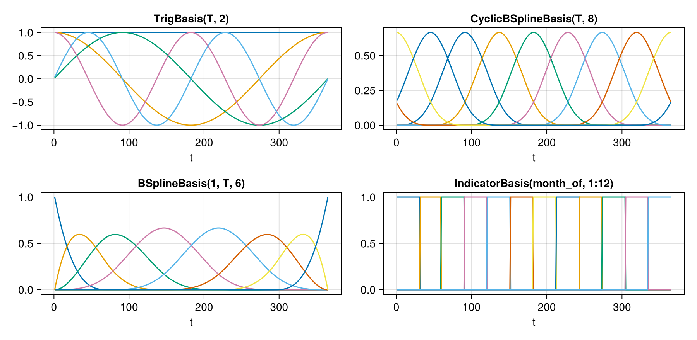
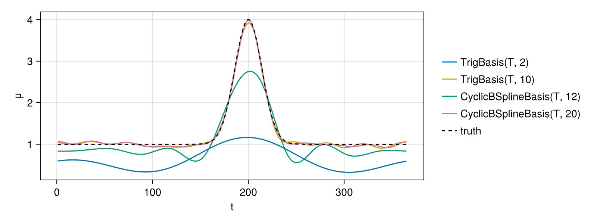
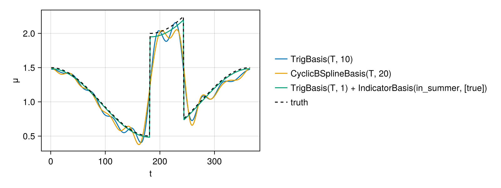

Bases
Every parameter of every model is a curve over the period indices $t \in \{1, \dots, T\}$: a combination of basis functions $b_1, \dots, b_n$ pushed through a link $g$ that keeps it in its domain,
\[\lambda(t) = g^{-1}\big(P(t)\big), \qquad P(t) = \sum_{i=1}^{n} c_i\, b_i(t).\]
A fit estimates the coefficients $c_1, \dots, c_n$. The trigonometric polynomial is the default basis, and only one of several: any basis below works for any parameter of any model, and two parameters of one model can have different bases.
The bases, with ParamSpec and TimeVaryingFamily, come from TimeVaryingParameters.jl, which this package re-exports. That package is not registered yet, so this package includes a copy of it, with the changes of pull request #10, as the submodule SmoothPeriodicStatsModels.TimeVaryingParameters. Take these names from this package: types from a separately installed TimeVaryingParameters.jl are different types.
The bases
| basis | functions $b_i(t)$ | $n$ | periodic | sums to one |
|---|---|---|---|---|
TrigBasis(T, d) | $1$, then $\cos(2\pi \ell t/T)$ and $\sin(2\pi \ell t/T)$ for $\ell = 1, \dots, d$ | $2d + 1$ | yes | contains $1$ |
CyclicBSplineBasis(T, q; degree = 3) | periodic B-splines on $q$ equally spaced knots over the period | $q$ | yes | yes |
BSplineBasis(lower, upper, q; degree = 3) | B-splines on $q$ equally spaced knots from lower to upper | $q + \text{degree} - 1$ | no | yes |
BSplineBasis(knots; degree = 3) | B-splines on the given knots | length(knots) + degree - 1 | no | yes |
IndicatorBasis(f, levels) | $\mathbf{1}\{f(t) = v\}$ for each $v$ in levels | length(levels) | as $f$ | if levels holds every value of $f$ |
PolynomialBasis(p; center, scale) | $u, u^2, \dots, u^p$ with $u = (t - \text{center})/\text{scale}$ | $p$ | no | no |
FourierBasis(T, d) | the cosines and sines of TrigBasis(T, d), without the $1$ | $2d$ | yes | no |
ConstantBasis() | $1$ | $1$ | yes | yes |
Bases add up: b₁ + b₂ puts their functions side by side. TrigBasis(T, d) is ConstantBasis() + FourierBasis(T, d), and TrigBasis(T, 0) is ConstantBasis(), a parameter constant over the cycle. A basis whose functions neither sum to one nor contain $1$ needs ConstantBasis() added; one whose functions sum to one must not get it, or the coefficients are no longer identifiable. nbasis(b) is $n$, and design_matrix(b, 1:T) the T × n matrix of the values $b_i(t)$.
using SmoothPeriodicStatsModels, CairoMakie, DatesT = 365month_of(t) = month(Date(2001, 1, 1) + Day(t - 1)) # the month of day t of a non-leap yearbases = ["TrigBasis(T, 2)" => TrigBasis(T, 2), "CyclicBSplineBasis(T, 8)" => CyclicBSplineBasis(T, 8), "BSplineBasis(1, T, 6)" => BSplineBasis(1, T, 6), "IndicatorBasis(month_of, 1:12)" => IndicatorBasis(month_of, 1:12)]fig = Figure(size=(900, 440))for (i, (name, b)) in enumerate(bases) ax = Axis(fig[fld1(i, 2), mod1(i, 2)], title=name, xlabel="t") X = design_matrix(b, 1:T) for j in axes(X, 2) lines!(ax, 1:T, X[:, j]) endendfig
Choosing a basis
TrigBasis, the default, follows a smooth cycle with few coefficients. Each coefficient acts on the whole cycle, so a sharp feature, such as a short peak, needs many harmonics, and these ripple elsewhere.CyclicBSplineBasisis periodic too, but each function is non-zero overdegree + 1knot intervals only, so each coefficient acts locally. It follows what a few harmonics cannot, such as a peak or several peaks per cycle.BSplineBasisis for an index that does not wrap around, where positionTis not followed by position 1, such as a position along a gene. The genomics tutorial compares it withTrigBasis.IndicatorBasisgives piecewise constant curves, for example one value per month: the monthly model of the home page, fitted by maximum likelihood like the smooth ones and compared with them by BIC.PolynomialBasis,FourierBasisandConstantBasisare pieces to combine with others.
Where each model takes its bases
| model | bases |
|---|---|
SmoothAR1(spec, T) | one per parameter, in spec = ParamSpec(μ=b₁ => IdentityLink(), ρ=b₂ => IntervalLink(-1, 1), σ=b₃ => LogLink()) |
SmoothSeasonalMixture(families, spec_α, T; init) | one per parameter of each component, in its family; the weights in spec_α = ParamSpec(α=b => IdentityLink()) |
SmoothARPeriodicHMM, SmoothsARPeriodicHMM | the keywords basis_A for the transitions and basis_B for the emissions |
SmoothARPeriodicHMMSpatial | basis_A, basis_B and basis_R for the ranges |
SmoothPeriodicHMM | basis_A for the transitions; each family carries the bases of its parameters |
A family takes one basis for all its parameters, seasonal_family(Gamma, basis), or one per parameter as a TimeVaryingFamily (see Seasonal families). The shorthand Gamma => d always means TrigBasis(T, d). With another basis, the coefficient arrays have $n$ entries where they had $2d + 1$: θᴬ is K × (K-1) × nbasis(basis_A).
The rest works as with the trigonometric basis. A scalar in init gives every spline coefficient the value, which makes the curve that constant (Starting values). fit_θ(hmm, basis) and fit_θᴮ!(θ, p; basis) fit coefficients on any basis to curves given at each period index, as the slice method does.
Two examples
A periodic AR(1) (tutorial) whose intercept $\mu(t)$ has a shape a few harmonics do not follow, with constant $\rho = 0.5$ and $\sigma = 0.8$, simulated over twenty years and fitted with several bases for $\mu$, $\rho$ and $\sigma$ staying constant:
using Optimization, SimpleNonlinearSolve, OptimizationOptimJL, Randomconstant = TrigBasis(T, 0)spec(b) = ParamSpec(μ=b => IdentityLink(), ρ=constant => IntervalLink(-1, 1), σ=constant => LogLink())simulate(μ) = (Random.seed!(1); rand(AR1(μ.(1:T), fill(0.5, T), fill(0.8, T)), 20T; y₁=0.0))fit_all(y, candidates) = [name => fit(SeasonalFit, SmoothAR1(spec(b), T), y; solver=LBFGS()) for (name, b) in candidates]bic_table(fits) = [(basis=name, dof=dof(f), bic=round(bic(f); digits=1), ρ=round(curve(f.model, :ρ)[1]; digits=2)) for (name, f) in fits]function plot_μ(fits, μ) fig = Figure(size=(800, 300)) ax = Axis(fig[1, 1], xlabel="t", ylabel="μ") for (name, f) in fits lines!(ax, 1:T, curve(f.model, :μ); label=name) end lines!(ax, 1:T, μ.(1:T); color=:black, linestyle=:dash, label="truth") Legend(fig[1, 2], ax, framevisible=false) return figendA summer peak
A peak of a few weeks, against trigonometric polynomials and periodic splines:
μ_peak(t) = 1 + 3exp(-((t - 200) / 20)^2)fits = fit_all(simulate(μ_peak), ["TrigBasis(T, 2)" => TrigBasis(T, 2), "TrigBasis(T, 10)" => TrigBasis(T, 10), "CyclicBSplineBasis(T, 12)" => CyclicBSplineBasis(T, 12), "CyclicBSplineBasis(T, 20)" => CyclicBSplineBasis(T, 20)])bic_table(fits)4-element Vector{@NamedTuple{basis::String, dof::Int64, bic::Float64, ρ::Float64}}:
(basis = "TrigBasis(T, 2)", dof = 7, bic = 18782.6, ρ = 0.76)
(basis = "TrigBasis(T, 10)", dof = 23, bic = 17748.6, ρ = 0.5)
(basis = "CyclicBSplineBasis(T, 12)", dof = 14, bic = 18093.7, ρ = 0.59)
(basis = "CyclicBSplineBasis(T, 20)", dof = 22, bic = 17735.6, ρ = 0.5)plot_μ(fits, μ_peak)
Twelve knots, 30 days apart, are too coarse for the peak. Twenty, 18 days apart, follow it and give the lowest BIC, just ahead of the trigonometric polynomial of degree 10, which has about as many coefficients. A curve that misses the peak also biases the other parameters: with degree 2, $\rho$ absorbs what $\mu$ cannot follow and comes out near 0.76 instead of 0.5.
A switch on known dates
A smooth cycle plus a jump in July and August, such as an activity on fixed dates. A sum of bases states that shape exactly: a trigonometric polynomial of degree 1 and the indicator of the two months, six coefficients in all with $\rho$ and $\sigma$:
in_summer(t) = 182 <= t <= 243 # July and Augustμ_switch(t) = 1 + 0.5cos(2π * t / T) + 1.5in_summer(t)fits = fit_all(simulate(μ_switch), ["TrigBasis(T, 10)" => TrigBasis(T, 10), "CyclicBSplineBasis(T, 20)" => CyclicBSplineBasis(T, 20), "TrigBasis(T, 1) + IndicatorBasis(in_summer, [true])" => TrigBasis(T, 1) + IndicatorBasis(in_summer, [true])])bic_table(fits)3-element Vector{@NamedTuple{basis::String, dof::Int64, bic::Float64, ρ::Float64}}:
(basis = "TrigBasis(T, 10)", dof = 23, bic = 17942.8, ρ = 0.52)
(basis = "CyclicBSplineBasis(T, 20)", dof = 22, bic = 17958.1, ρ = 0.53)
(basis = "TrigBasis(T, 1) + IndicatorBasis(in_summer, [true])", dof = 6, bic = 17608.4, ρ = 0.51)plot_μ(fits, μ_switch)
The smooth bases round off the jumps and ripple next to them, however many coefficients they have. The sum follows them with a single coefficient, and the BIC prefers it by far.